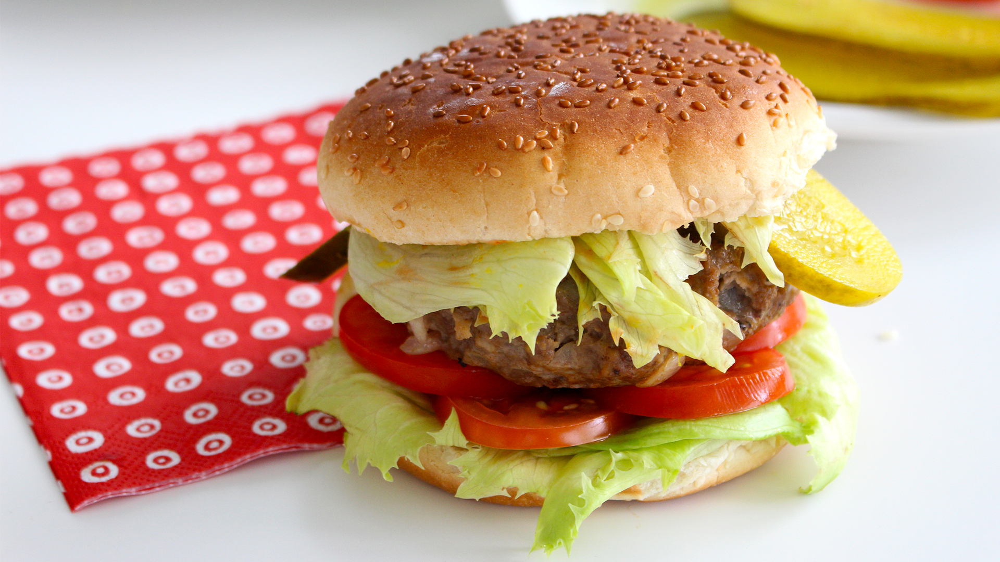
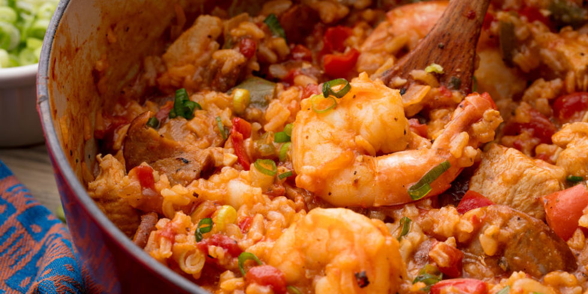
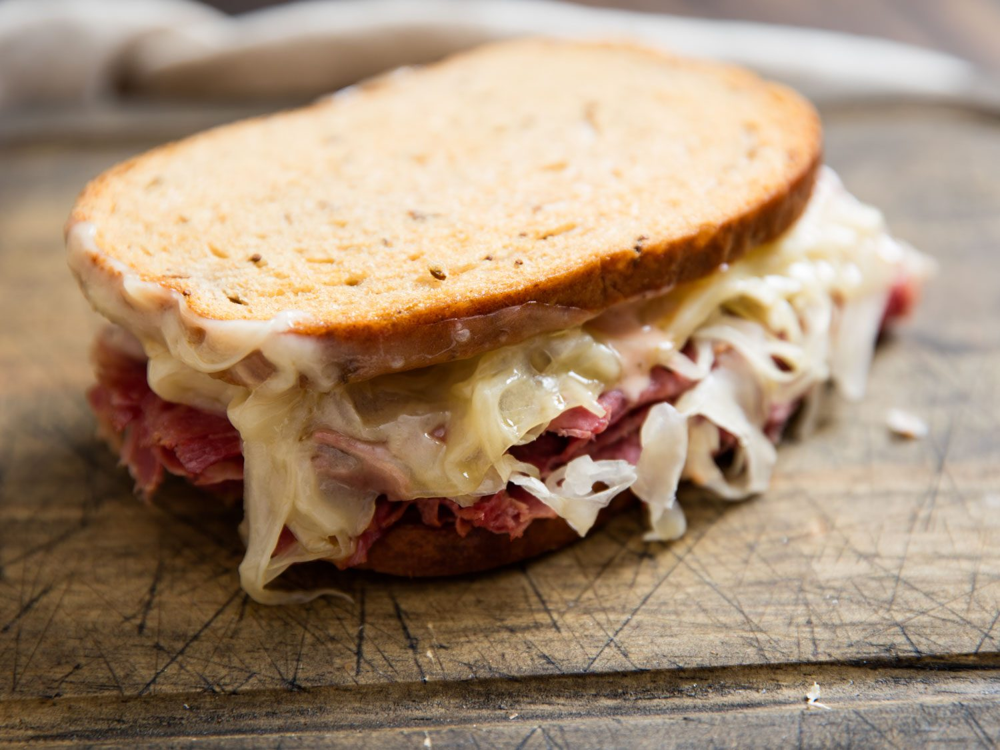

Hola bienvenidos al menu de platillos de Estados Unidos.
Platillo |
Imagen |
Informacion |
| 1-Hamburguesa. |
 | Raro es el restaurante americano que no ofrezca hamburguesas en su carta: se suelen comer tanto en chiringuitos cutres como en restaurantes de lujo y es que la hamburguesa es, sin duda, el plato más característico de Estados Unidos. Si eres todo un gourmet no descartes para nada la idea del fast food grasiento: en algunos, como en Five Guys o In ‘n out, se puede comer una hamburguesa cojonuten (y baratita!).
|
|
2-Jambalaya.
|  |
Es un plato cajún, típico de Nueva Orleans, una ciudad que de gastronomía y cocina fusión sabe bastante. Se trata básicamente de arroz con pollo, gambas, salchichas y unas cuantas especias. Tiene un toque picante, así que si no te mola el rollo spicy… pues, casi pide otra cosa. En el pasado era un plato “pobre” ya que se preparaba con los restos de comidas anteriores. Hoy es uno de los más famosos del estado de Louisiana. |
|
3-Reuben Sandwich.
|
 |
Los ingredientes de este bocadillo son sencillos: corned beef (parecido al pastrami), queso suizo, chucrut y salsa rusa (mayonesa, kétchup, especias, pimiento, rábano y cebolleta picados muy finos). |